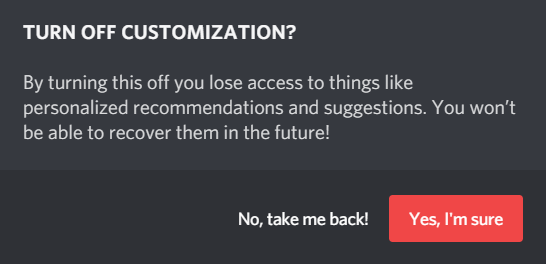
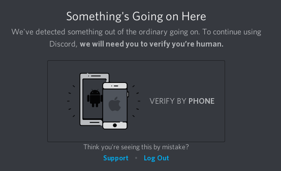

Discord es una aplicación de mensajería instantánea disponible para MacOS, Windows, Linux, Android y iOS. Discord es utilizado principalmente para comunicación por voz y chat de texto. También tiene soporte para compartir archivos.
Gracias a Richard Stallman por citar este artículo aquí. La mención es muy apreciada.
Discord es spyware porque recoge casi toda la información que pasa por su plataforma de comunicación. Como Discord funciona con un modelo centralizado, todas las comunicaciones deben pasar por sus servidores oficiales, donde la información de los usuarios puede ser recopilada. Se ha confirmado que de hecho, la gran mayoría de las comunicaciones entre usuarios son grabadas. También se ha confirmado que Discord contiene otras formas de spyware como telemetría. Por ahora se sabe que la principal fuente de ingresos de Discord es la inversión, de la que ha recibido más de $279.3 millones de dólares[4]. Discord es software privativo y no puede ser construído desde su código fuente.
Es imposible descargar y examinar el código fuente de Discord, lo que significa que es imposible probar que Discord no es spyware. De hecho, cualquier programa que no haga público su código fuente puede ser considerado spyware potencial.
Discord confirma explícitamente en su Política de Privacidad[1] que recopila la siguiente información:
Además, Discord no confirma que recopila la siguiente información, pero se sabe que por defecto es recopilada:
Toda la información anteriormente mencionada podría estar siendo registrada por lo siguiente: Al recoger tu dirección IP, Discord puede rastrear tu localización aproximada (la precisión depende de tu país). Discord también puede saber qué dispositivos usas, ya que los identifica de forma única, y también sabe cuán seguido los utilizas, ya que analiza tus hábitos de uso (Discord siempre se está ejecutando en segundo plano para poder recibir mensajes). Discord también sabe todas las interacciones que realizas con otros usuarios porque registra todas tus conversaciones de texto y voz, así como las imágenes que envías. Por lo tanto, ninguna de tus conversaciones en Discord es privada. Su Política de Privacidad es muy explícita y contiene frases como "incluyendo, pero no limitándose a...", lo que es una confirmación de que su aplicación de mensajería contiene más spyware del que mencionan, el cual no es notificado al usuario.
Discord contiene una caracterísitca conocida como "integración con redes sociales". Esto permite al usuario sincronizar su identidad en Discord con su identidad en otras plataformas, como Facebook y Twitter. En la Política de Privacidad de Discord[1], se confirma que si optas por usar esta característica, Discord obtendrá un nivel de acceso no revelado a tu información en las redes sociales que elijas sincronizar.
Discord monitorea los procesos abiertos en tu sistema operativo. Esta forma de spyware se conoce como "process logger" en inglés, y es usada generalmente para recopilar tus hábitos de uso. Esto fue confirmado por el mismo Director de Tecnología (CTO) de Discord en un hilo de Reddit.[2] En ese hilo, el CTO mencionó que esta característica espía es obligatoria para brindar varios servicios de la plataforma. Según el CTO y un ingeniero de Discord, los listados de procesos en los dispositivos de los usuarios no son registrados.
Se llevó a acabo un procedimiento para probar si Discord de verdad no registra los procesos. Esto fue hecho usando procmon el día 4 de abril de 2019, y las opciones de Discord "Usar mis datos para personalizar mi experiencia" y "Mostrar el juego en curso como una notifación" fueron desactivadas. Resultó que Discord NO registró todos los procesos con esa configuración. Sin embargo, cuando la opción "Mostrar el juego en curso como una notifación" fue activada, el comportamiento descrito en [2] fue replicado. Puedes ver el comportamiento del process logger aquí:
![Listado de procesos de Discord como se mencionó en [2], confirmado por procmon](../images/discord_process_logging.png)
Así que esta característica de spyware puede ser deshabilitada en Discord. Sin embargo, por la naturaleza del software privativo, no es posible saber cuánta información es enviada a los servidores de Discord cuando el process logger está activado, pero al menos se puede desactivar.
Discord lo muestra así aquí:

Los procesos de los dispositivos de los usuarios que Discord registra en sus servidores son usados como una forma de telemetría (spyware), y eso resuelve la especulación de por qué el process logger existe en primer lugar. Discord confirma que esta característica es usada para mostrar publicidad a los usuarios.[8] Lo que lleva a la conclusión de que Discord recopila tus programas abiertos para construir modelos estadísticos sobre qué programas te interesan y podrías comprar en el futuro
Discord bloqueará a los usuarios y no los dejará continuar usando sus servicios si ellos no dan su número de teléfono o contactan al servicio a cliente de Discord. Este tipo de características están diseñadas para extraer información sensible de los usuarios (en este caso, sus números de teléfono). La razón por la que bloquean a los usuarios no se sabe.
Discord confirmó en un email[6] que recibe solicitudes gubernamentales para obtener información. De esta forma sabemos que los gobiernos tienen acceso potencial a toda la información que Discord recopila sobre ti. Puedes leer una copia del email aquí en caso de que el enlace original sea borrado.
No se sabe si Discord está o no vendiendo información. Actualmente Discord ha sido capaz de recaudar capital de inversión, lo que ha estado cubriendo todos sus costos de operación. Sin embargo, Discord, como cualquier otra compañía, no existirá en un constante estado de dependencia de la inversión. Discord, tarde o temprano, tendrá que moverse de su actual modelo de negocios a otro que genere ingresos valiéndose de los usuarios de su plataforma.
Por ahora Discord tiene varias formas de hacer dinero. Puede vender características con Discord Nitro[5], o puede hacer dinero con su tienda de juegos que compite con Steam. Sin embargo, esas dos fuentes de ingresos no podrían ser suficiente. Discord ha recaudado $279.3 millones de dólares para mantener su plataforma[4], así tiene que generar más que esa cantidad.
Si Discord no es capaz de satisfacer su obligación con sus inversores, tiene la opción de vender datos de los usuarios a anunciantes, y de hecho, ya está minando datos de los usuarios para su sistema de recomendaciones[8], lo que significa que ya está construyendo una base datos valiosa y lucrativa para los anunciantes. Discord tiene 130 millones de usuarios[7], así que puede producir modelos estadísticos de los juegos que cada usuario posee, juega y quiere jugar/comprar. Esa es información increíblemente valiosa que Discord podría vender en caso de no poder cumplir con sus obligaciones con los inversores. Sin embargo, si su tienda se vuelve existosa, podría no tener necesidad de vender datos, pero si se mete en problemas financieros, es muy probable que se vea forzada a vender datos.
1.
Discord Privacy Policy
[web.archive.org]
[archive.is]
2.
Why is Discord recording our open programs and uploading them?
[web.archive.org]
[archive.is]
3.
Discord
[wayback.archive-it.org]
[archive.is]
4.
Crunchbase
[web.archive.org]
[archive.is]
5.
Discord Nitro
[archive.is]
6.
Discord receives government requests. No plans on adding E2E Encryption any time soon.
[archive.is]
[web.archive.org]
7.
Number of registered Discord users
[web.archive.org]
8.
Data Privacy Controls
[web.archive.org]
Este artículo fue traducido al español de la versión original en inglés el día 22/5/2019 (m/d/y: 5/22/2019). Al ser una traducción, puede quedar desactualizada en cualquier momento.
This article was last edited on 4/11/2019
This article was created on 11/23/17
If you want to edit this article, or contribute your own article(s), contact us on XMPP over in spyware@conference.nuegia.net, or visit us at the git repo on Codeberg. All contributions must be licensed under the CC0 liscence to be accepted.

{kind=link}